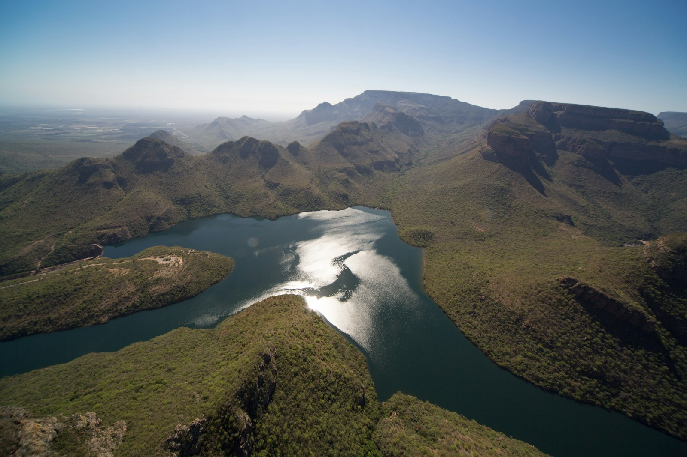
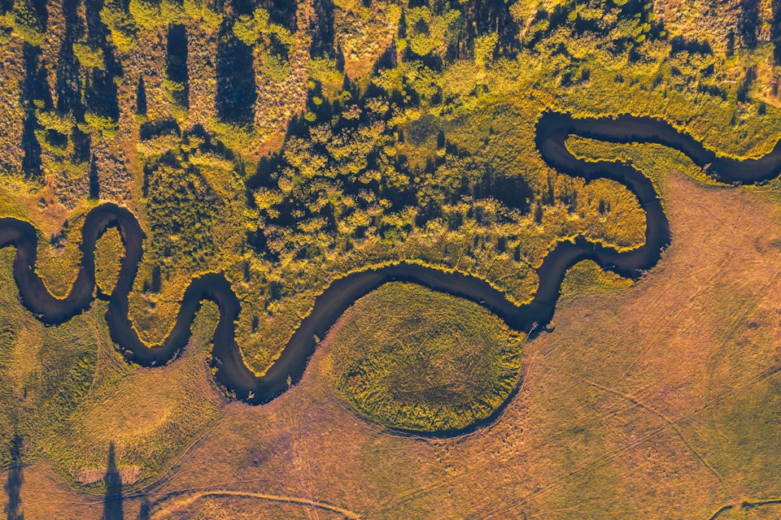
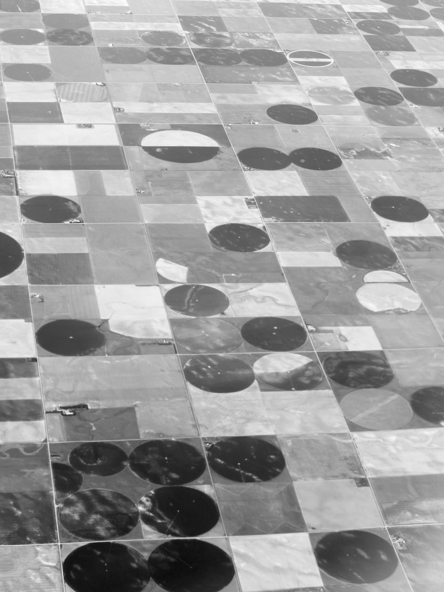
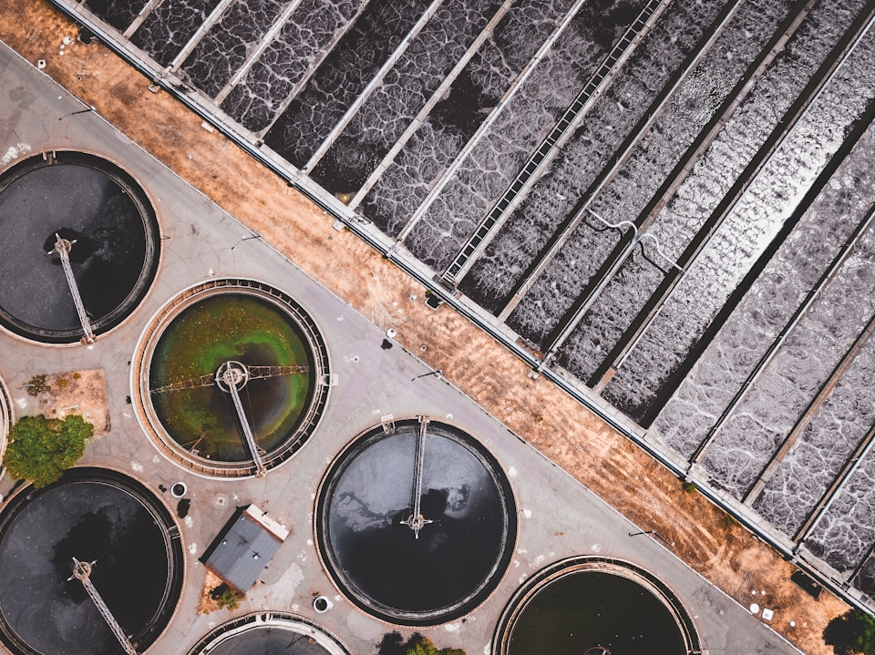

Геоэкология и Водные Ресурсы
Исследование водных систем через призму ландшафтов, процессов и антропогенной нагрузки — строгая структура, ясные выводы, аккуратные данные.

О проекте
Это учебно‑исследовательский каркас: строгая структура страниц и единый визуальный язык для материалов по геоэкологии и водным ресурсам.
Фокус
Бассейн • процессы • нагрузка
Метод
Наблюдения → интерпретация → выводы
Формат
Коротко, но проверяемо



Русловая сеть и пойма как часть бассейна; орошение и водопотребление в
сельском хозяйстве; очистка сточных вод и управление качеством в городе.
71%
поверхности Земли покрыто водой
~3%
всей воды — пресная, доступная для жизни
2,5 млрд
людей без безопасного водоснабжения дома
>80%
сточных вод в мире сбрасывается без очистки
Как читать материалы
Каждый раздел будет собираться вокруг одной логики: сначала геосистема и её границы (водосбор), затем процессы и перенос, потом показатели качества воды и только после этого — выводы и меры.
Шаг 1
Границы водосбора и контекст территории
Шаг 2
Процессы: сток, инфильтрация, аккумуляция
Шаг 3
Нагрузка: источники, перенос, пороги
Шаг 4
Мониторинг → интерпретация → решения